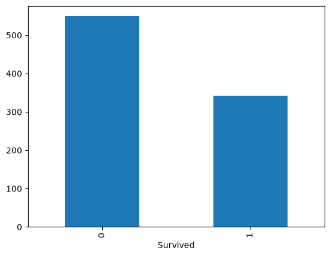
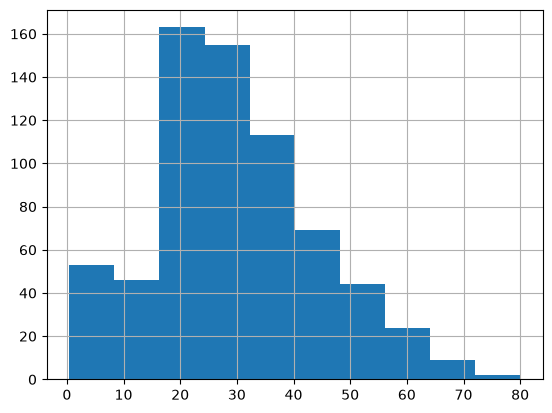
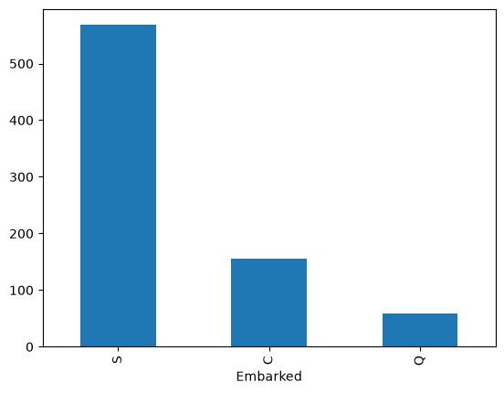
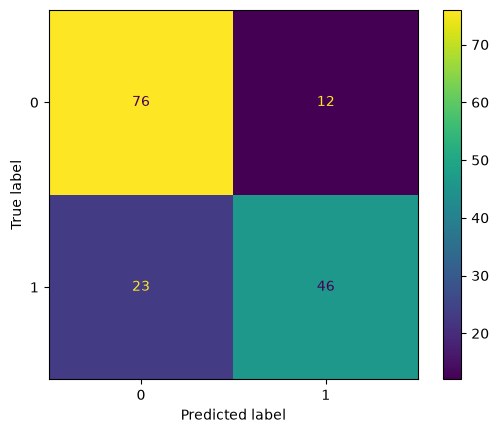

%pip install --upgrade -q matplotlib numpy pandas scikit-learn tensorflowTitanic’s Survivor Prediction
Deep Learning
Classification
Overview
This notebook investigates the implementation of artificial neural network (ANN) models to classify whether the titanic’s passenger survived or not using the following dataset.
The analysis covers these main steps:
- Data preprocessing and Exploratory Data Analysis (EDA)
- Model training
- Model evaluation
The primary objective of this notebook is to perform an end-to-end machine learning process and implement a simple perceptron model.
Install and Import Packages
import matplotlib.pyplot as plt
import numpy as np
import pandas as pd
import tensorflow as tfLoad Dataset
df = pd.read_csv('data/titanic.csv')
df.head()| PassengerId | Survived | Pclass | Name | Sex | Age | SibSp | Parch | Ticket | Fare | Cabin | Embarked | |
|---|---|---|---|---|---|---|---|---|---|---|---|---|
| 0 | 1 | 0 | 3 | Braund, Mr. Owen Harris | male | 22.0 | 1 | 0 | A/5 21171 | 7.2500 | NaN | S |
| 1 | 2 | 1 | 1 | Cumings, Mrs. John Bradley (Florence Briggs Th... | female | 38.0 | 1 | 0 | PC 17599 | 71.2833 | C85 | C |
| 2 | 3 | 1 | 3 | Heikkinen, Miss. Laina | female | 26.0 | 0 | 0 | STON/O2. 3101282 | 7.9250 | NaN | S |
| 3 | 4 | 1 | 1 | Futrelle, Mrs. Jacques Heath (Lily May Peel) | female | 35.0 | 1 | 0 | 113803 | 53.1000 | C123 | S |
| 4 | 5 | 0 | 3 | Allen, Mr. William Henry | male | 35.0 | 0 | 0 | 373450 | 8.0500 | NaN | S |
Data Preprocessing and EDA
Let’s take a look at the overview of the dataset.
df.info()<class 'pandas.DataFrame'>
RangeIndex: 891 entries, 0 to 890
Data columns (total 12 columns):
# Column Non-Null Count Dtype
--- ------ -------------- -----
0 PassengerId 891 non-null int64
1 Survived 891 non-null int64
2 Pclass 891 non-null int64
3 Name 891 non-null str
4 Sex 891 non-null str
5 Age 714 non-null float64
6 SibSp 891 non-null int64
7 Parch 891 non-null int64
8 Ticket 891 non-null str
9 Fare 891 non-null float64
10 Cabin 204 non-null str
11 Embarked 889 non-null str
dtypes: float64(2), int64(5), str(5)
memory usage: 83.7 KBBased on the output above, here are some informations about the dataset. - The dataset has 891 rows and 12 columns. - The target variable is ‘Survived’. - The features consist of both numerical and categorical features. - Notice that there are some features with missing values.
Let’s also see the distribution of the target variable (Survived).
df['Survived'].value_counts()Survived
0 549
1 342
Name: count, dtype: int64df['Survived'].value_counts().plot(kind='bar')
Drop Unnecessary Columns
We need to drop some columns: - PassengerId because it is equal/similar to the index - Name - Ticket
df = df.drop(columns=['PassengerId', 'Name', 'Ticket'])Check and Drop Duplicates (If Exist)
# check and drop duplicated rows (if exist)
total_duplicates = df.duplicated().sum()
print(f'Total duplicated rows: {total_duplicates}')
if total_duplicates:
df = df.drop_duplicates().reset_index(drop=True)
print('All duplicated rows has been removed.')
else:
print('No duplicated rows need to be dropped.')Total duplicated rows: 107
All duplicated rows has been removed.df| Survived | Pclass | Sex | Age | SibSp | Parch | Fare | Cabin | Embarked | |
|---|---|---|---|---|---|---|---|---|---|
| 0 | 0 | 3 | male | 22.0 | 1 | 0 | 7.2500 | NaN | S |
| 1 | 1 | 1 | female | 38.0 | 1 | 0 | 71.2833 | C85 | C |
| 2 | 1 | 3 | female | 26.0 | 0 | 0 | 7.9250 | NaN | S |
| 3 | 1 | 1 | female | 35.0 | 1 | 0 | 53.1000 | C123 | S |
| 4 | 0 | 3 | male | 35.0 | 0 | 0 | 8.0500 | NaN | S |
| ... | ... | ... | ... | ... | ... | ... | ... | ... | ... |
| 779 | 0 | 3 | female | 39.0 | 0 | 5 | 29.1250 | NaN | Q |
| 780 | 1 | 1 | female | 19.0 | 0 | 0 | 30.0000 | B42 | S |
| 781 | 0 | 3 | female | NaN | 1 | 2 | 23.4500 | NaN | S |
| 782 | 1 | 1 | male | 26.0 | 0 | 0 | 30.0000 | C148 | C |
| 783 | 0 | 3 | male | 32.0 | 0 | 0 | 7.7500 | NaN | Q |
784 rows × 9 columns
Handling Missing Values
Let’s check again the missing values for each column.
print('Missing values for each column:')
df.isna().sum()Missing values for each column:Survived 0
Pclass 0
Sex 0
Age 106
SibSp 0
Parch 0
Fare 0
Cabin 581
Embarked 2
dtype: int64There are 3 columns with missing values: Age, Cabin, and Embarked.
df['Age'].hist()
df['Cabin'].value_counts()Cabin
G6 4
C23 C25 C27 4
B96 B98 4
F33 3
E101 3
..
E17 1
A24 1
C50 1
B42 1
C148 1
Name: count, Length: 147, dtype: int64df['Embarked'].value_counts().plot(kind='bar')
Handling missing values startegy:
The Cabin column exhibits an exceptionally high percentage of missing data (over 77% missing values across the dataset). Furthermore, the non-missing entries consist of highly sparse alphanumeric string values representing specific room identifiers. Attempting to impute such a large volume of missing records would introduce severe synthetic bias, while converting the high-cardinality string values would needlessly inflate feature dimensionality. Consequently, the Cabin feature need to be dropped entirely to preserve model efficiency and dataset integrity.
Missing values in the Age feature were imputed using the dataset’s median value rather than the mean. Age exhibits a right-skewed distribution with notable presence of outliers (e.g., elderly passengers and young infants). Using median imputation ensures robust central tendency substitution that is not skewed by extreme values, preserving the underlying numerical distribution without dropping valuable passenger records.
The Embarked feature is a categorical variable representing the port of embarkation, containing only a minimal number of missing instances (2 rows). Since statistical operations like mean or median are inapplicable to nominal categorical features, mode imputation (replacing missing values with the most frequently occurring category, ‘S’ for Southampton) was applied. This approach preserves all observations without introducing artificial categorical labels.
First, let’s drop the Cabin column.
df = df.drop(columns=['Cabin'])Before imputing the missing values for Age and Embarked, split the the data into train and test set. Here, we are using 80:20 ratio for the train and test set.
We must split our data first, to avoid data leakage
Train-Test Split
from sklearn.model_selection import train_test_split
target = 'Survived'
y = df[target].values
X_df = df.drop(columns=[target])
X_train_df, X_test_df, y_train, y_test = train_test_split(X_df, y, test_size=0.2, random_state=42)
print(f'X_train_df shape: {X_train_df.shape}')
print(f'X_test_df shape: {X_test_df.shape}')
print(f'y_train shape: {y_train.shape}')
print(f'y_test shape: {y_test.shape}')X_train_df shape: (627, 7)
X_test_df shape: (157, 7)
y_train shape: (627,)
y_test shape: (157,)# fill age column with age median in X_train_df
age_train_median = X_train_df['Age'].median()
X_train_df['Age'] = X_train_df['Age'].fillna(age_train_median)
X_test_df['Age'] = X_test_df['Age'].fillna(age_train_median)
# fill embarked column with embarked mode in X_train_df
embarked_train_mode = X_train_df['Embarked'].mode()[0]
X_train_df['Embarked'] = X_train_df['Embarked'].fillna(embarked_train_mode)
X_test_df['Embarked'] = X_test_df['Embarked'].fillna(embarked_train_mode)X_train_df.info()<class 'pandas.DataFrame'>
Index: 627 entries, 762 to 102
Data columns (total 7 columns):
# Column Non-Null Count Dtype
--- ------ -------------- -----
0 Pclass 627 non-null int64
1 Sex 627 non-null str
2 Age 627 non-null float64
3 SibSp 627 non-null int64
4 Parch 627 non-null int64
5 Fare 627 non-null float64
6 Embarked 627 non-null str
dtypes: float64(2), int64(3), str(2)
memory usage: 39.2 KBX_test_df.info()<class 'pandas.DataFrame'>
Index: 157 entries, 598 to 559
Data columns (total 7 columns):
# Column Non-Null Count Dtype
--- ------ -------------- -----
0 Pclass 157 non-null int64
1 Sex 157 non-null str
2 Age 157 non-null float64
3 SibSp 157 non-null int64
4 Parch 157 non-null int64
5 Fare 157 non-null float64
6 Embarked 157 non-null str
dtypes: float64(2), int64(3), str(2)
memory usage: 9.8 KBLet’s take a look at the unique values and the mode of current each column.
print('-----Unique Values and Mode in Each Column-----\n\n')
for column in X_train_df.columns.tolist():
print(f'Unique Values in {column}:')
print(X_train_df[column].unique().tolist())
print()
print(f'Mode: {X_train_df[column].mode()[0]}')
print('='*50)-----Unique Values and Mode in Each Column-----
Unique Values in Pclass:
[2, 3, 1]
Mode: 3
==================================================
Unique Values in Sex:
['male', 'female']
Mode: male
==================================================
Unique Values in Age:
[24.0, 22.0, 29.0, 21.0, 24.5, 51.0, 49.0, 54.0, 38.0, 28.0, 9.0, 31.0, 10.0, 15.0, 40.0, 59.0, 18.0, 32.0, 71.0, 42.0, 19.0, 16.0, 30.0, 36.0, 56.0, 1.0, 17.0, 2.0, 27.0, 36.5, 26.0, 7.0, 40.5, 50.0, 62.0, 52.0, 28.5, 8.0, 60.0, 46.0, 39.0, 70.5, 33.0, 6.0, 4.0, 48.0, 45.0, 47.0, 11.0, 25.0, 37.0, 34.0, 23.0, 14.0, 74.0, 70.0, 58.0, 3.0, 13.0, 20.0, 43.0, 55.0, 41.0, 44.0, 0.83, 23.5, 32.5, 30.5, 55.5, 57.0, 5.0, 35.0, 0.92, 65.0, 0.67, 61.0, 64.0, 0.42, 63.0, 14.5, 80.0, 53.0, 45.5]
Mode: 29.0
==================================================
Unique Values in SibSp:
[0, 1, 2, 5, 4, 3, 8]
Mode: 0
==================================================
Unique Values in Parch:
[0, 1, 2, 5, 3, 4, 6]
Mode: 0
==================================================
Unique Values in Fare:
[13.0, 7.75, 211.3375, 10.5, 19.9667, 8.05, 77.9583, 7.05, 110.8833, 0.0, 14.0, 16.7, 80.0, 29.7, 7.925, 15.9, 8.6625, 24.15, 7.2292, 7.225, 7.25, 49.5042, 7.65, 55.0, 15.1, 79.2, 7.8792, 46.9, 90.0, 6.4958, 12.35, 12.875, 6.75, 30.6958, 11.1333, 7.0542, 10.4625, 56.9292, 57.9792, 11.5, 40.125, 7.8958, 26.0, 56.4958, 51.8625, 57.0, 26.25, 39.6875, 14.5, 247.5208, 83.1583, 15.2458, 24.0, 15.55, 13.5, 21.0, 14.4583, 8.6833, 55.9, 133.65, 21.075, 93.5, 75.25, 31.275, 15.85, 76.7292, 39.0, 7.7375, 39.6, 49.5, 26.55, 34.375, 38.5, 18.0, 18.7875, 17.8, 83.475, 35.5, 7.0458, 12.2875, 9.5875, 32.5, 108.9, 7.55, 50.0, 42.4, 26.2875, 29.125, 7.7333, 7.775, 52.0, 73.5, 7.725, 63.3583, 120.0, 20.575, 7.8292, 12.475, 7.7958, 69.3, 41.5792, 25.4667, 9.225, 15.5, 153.4625, 82.1708, 22.525, 16.0, 19.5, 34.0208, 7.7292, 30.0708, 8.0292, 52.5542, 23.0, 9.5, 211.5, 13.8625, 15.75, 29.0, 61.175, 65.0, 77.2875, 18.75, 16.1, 7.6292, 7.125, 227.525, 8.1125, 91.0792, 30.5, 23.25, 30.0, 71.0, 9.825, 25.9292, 7.4958, 9.35, 7.8542, 27.7208, 7.8, 9.8458, 37.0042, 27.9, 12.525, 26.3875, 15.05, 66.6, 6.95, 19.2583, 20.525, 31.3875, 22.025, 134.5, 78.85, 8.1375, 79.65, 27.75, 15.0458, 39.4, 14.4542, 33.0, 8.4583, 5.0, 6.975, 69.55, 14.1083, 53.1, 106.425, 151.55, 6.45, 12.275, 9.4833, 164.8667, 113.275, 86.5, 8.3625, 262.375, 33.5, 14.4, 61.9792, 8.3, 10.1708, 135.6333, 6.2375, 20.25, 61.3792, 7.3125, 146.5208, 31.0, 7.7417, 263.0, 8.5167, 4.0125, 32.3208, 15.0, 59.4, 15.7417, 13.4167, 17.4, 21.6792, 23.45, 221.7792, 26.2833, 9.475, 36.75, 8.4042, 22.3583, 71.2833, 47.1, 76.2917, 34.6542, 55.4417, 512.3292, 20.2125, 10.5167, 51.4792, 25.925, 8.85, 7.875, 89.1042, 28.5, 9.2167]
Mode: 13.0
==================================================
Unique Values in Embarked:
['S', 'C', 'Q']
Mode: S
==================================================Next, we divide the train and test dataset into 2 parts: numerical features only and categorical features only for scaling and encoding purpose, respectively.
cat_columns = ['Pclass', 'Sex', 'Embarked']
num_columns = list(set(X_train_df.columns) - set(cat_columns))
X_train_cat_df = X_train_df[cat_columns]
X_test_cat_df = X_test_df[cat_columns]
X_train_num_df = X_train_df[num_columns]
X_test_num_df = X_test_df[num_columns]
print(f'X_train_cat_df shape: {X_train_cat_df.shape}')
print(f'X_test_cat_df shaep: {X_test_cat_df.shape}')
print(f'X_train_num_df shape: {X_train_num_df.shape}')
print(f'X_test_num_df shape: {X_test_num_df.shape}')X_train_cat_df shape: (627, 3)
X_test_cat_df shaep: (157, 3)
X_train_num_df shape: (627, 4)
X_test_num_df shape: (157, 4)Numerical Feature Scaling
X_train_num_df.head()| SibSp | Fare | Age | Parch | |
|---|---|---|---|---|
| 762 | 0 | 13.0000 | 24.0 | 0 |
| 133 | 0 | 7.7500 | 22.0 | 0 |
| 648 | 0 | 211.3375 | 29.0 | 0 |
| 55 | 0 | 10.5000 | 21.0 | 0 |
| 411 | 1 | 19.9667 | 29.0 | 0 |
Based on the displayed X_train_num_df, we can see that the numerical features exhibit vastly different scales and measurement ranges. MinMaxScaler is applied to transform all numerical features to transform the data into range \([0,1]\).
from sklearn.preprocessing import MinMaxScaler
scaler = MinMaxScaler()
X_train_num = X_train_num_df.values
X_test_num = X_test_num_df.values
X_train_num_scaled = scaler.fit_transform(X_train_num)
X_test_num_scaled = scaler.transform(X_test_num)
X_train_num_scaled_df = pd.DataFrame(data=X_train_num_scaled, columns=num_columns)
X_test_num_scaled_df = pd.DataFrame(data=X_test_num_scaled, columns=num_columns)X_train_num_scaled_df| SibSp | Fare | Age | Parch | |
|---|---|---|---|---|
| 0 | 0.000 | 0.025374 | 0.296306 | 0.0 |
| 1 | 0.000 | 0.015127 | 0.271174 | 0.0 |
| 2 | 0.000 | 0.412503 | 0.359135 | 0.0 |
| 3 | 0.000 | 0.020495 | 0.258608 | 0.0 |
| 4 | 0.125 | 0.038972 | 0.359135 | 0.0 |
| ... | ... | ... | ... | ... |
| 622 | 0.000 | 0.143462 | 0.258608 | 0.0 |
| 623 | 0.000 | 0.015713 | 0.271174 | 0.0 |
| 624 | 0.000 | 0.015412 | 0.271174 | 0.0 |
| 625 | 0.000 | 0.015713 | 0.623021 | 0.0 |
| 626 | 0.000 | 0.015412 | 0.472229 | 0.0 |
627 rows × 4 columns
X_test_num_scaled_df| SibSp | Fare | Age | Parch | |
|---|---|---|---|---|
| 0 | 0.00 | 0.019210 | 0.220910 | 0.000000 |
| 1 | 0.00 | 0.015713 | 0.535059 | 0.000000 |
| 2 | 0.00 | 0.015713 | 0.635587 | 0.000000 |
| 3 | 0.00 | 0.015176 | 0.409399 | 0.000000 |
| 4 | 0.25 | 0.076123 | 0.007288 | 0.166667 |
| ... | ... | ... | ... | ... |
| 152 | 0.00 | 0.015200 | 0.359135 | 0.000000 |
| 153 | 0.00 | 0.015094 | 0.195778 | 0.000000 |
| 154 | 0.00 | 0.014151 | 0.371701 | 0.000000 |
| 155 | 0.00 | 0.000000 | 0.497361 | 0.000000 |
| 156 | 0.00 | 0.015412 | 0.321438 | 0.000000 |
157 rows × 4 columns
Categorical Feature Encoding
Note that machine learning algorithms can only process number. This means we need to encode the categorical features.
X_train_cat_df.head()| Pclass | Sex | Embarked | |
|---|---|---|---|
| 762 | 2 | male | S |
| 133 | 3 | female | S |
| 648 | 1 | female | S |
| 55 | 2 | female | S |
| 411 | 3 | male | S |
X_train_nom_cat_df = X_train_cat_df.drop(columns=['Pclass'])
X_test_nom_cat_df = X_test_cat_df.drop(columns=['Pclass'])One Hot Encoding
X_train_nom_cat_encoded_df = pd.get_dummies(data=X_train_nom_cat_df, columns=X_train_nom_cat_df.columns, drop_first=True, dtype=int).reset_index(drop=True)
X_test_nom_cat_encoded_df = pd.get_dummies(data=X_test_nom_cat_df, columns=X_train_nom_cat_df.columns, drop_first=True, dtype=int).reset_index(drop=True)X_train_cat_encoded_df = X_train_nom_cat_encoded_df.copy()
X_train_cat_encoded_df['Pclass'] = X_train_cat_df['Pclass'].values
X_test_cat_encoded_df = X_test_nom_cat_encoded_df.copy()
X_test_cat_encoded_df['Pclass'] = X_test_cat_df['Pclass'].valuesX_train_cat_encoded_df| Sex_male | Embarked_Q | Embarked_S | Pclass | |
|---|---|---|---|---|
| 0 | 1 | 0 | 1 | 2 |
| 1 | 0 | 0 | 1 | 3 |
| 2 | 0 | 0 | 1 | 1 |
| 3 | 0 | 0 | 1 | 2 |
| 4 | 1 | 0 | 1 | 3 |
| ... | ... | ... | ... | ... |
| 622 | 1 | 0 | 1 | 2 |
| 623 | 1 | 0 | 1 | 3 |
| 624 | 1 | 0 | 1 | 3 |
| 625 | 1 | 0 | 1 | 3 |
| 626 | 1 | 0 | 1 | 3 |
627 rows × 4 columns
X_test_cat_encoded_df| Sex_male | Embarked_Q | Embarked_S | Pclass | |
|---|---|---|---|---|
| 0 | 0 | 0 | 1 | 3 |
| 1 | 1 | 0 | 1 | 3 |
| 2 | 1 | 0 | 1 | 3 |
| 3 | 1 | 0 | 1 | 3 |
| 4 | 1 | 0 | 1 | 2 |
| ... | ... | ... | ... | ... |
| 152 | 0 | 1 | 0 | 3 |
| 153 | 0 | 1 | 0 | 3 |
| 154 | 1 | 0 | 1 | 3 |
| 155 | 1 | 0 | 1 | 1 |
| 156 | 1 | 0 | 1 | 3 |
157 rows × 4 columns
# concatenate preprocessed numeical and categorical features
X_train_preprocessed_df = pd.concat([X_train_num_scaled_df, X_train_cat_encoded_df], axis=1).sort_index(axis=1)
X_test_preprocessed_df = pd.concat([X_test_num_scaled_df, X_test_cat_encoded_df], axis=1).sort_index(axis=1)X_train_preprocessed_df| Age | Embarked_Q | Embarked_S | Fare | Parch | Pclass | Sex_male | SibSp | |
|---|---|---|---|---|---|---|---|---|
| 0 | 0.296306 | 0 | 1 | 0.025374 | 0.0 | 2 | 1 | 0.000 |
| 1 | 0.271174 | 0 | 1 | 0.015127 | 0.0 | 3 | 0 | 0.000 |
| 2 | 0.359135 | 0 | 1 | 0.412503 | 0.0 | 1 | 0 | 0.000 |
| 3 | 0.258608 | 0 | 1 | 0.020495 | 0.0 | 2 | 0 | 0.000 |
| 4 | 0.359135 | 0 | 1 | 0.038972 | 0.0 | 3 | 1 | 0.125 |
| ... | ... | ... | ... | ... | ... | ... | ... | ... |
| 622 | 0.258608 | 0 | 1 | 0.143462 | 0.0 | 2 | 1 | 0.000 |
| 623 | 0.271174 | 0 | 1 | 0.015713 | 0.0 | 3 | 1 | 0.000 |
| 624 | 0.271174 | 0 | 1 | 0.015412 | 0.0 | 3 | 1 | 0.000 |
| 625 | 0.623021 | 0 | 1 | 0.015713 | 0.0 | 3 | 1 | 0.000 |
| 626 | 0.472229 | 0 | 1 | 0.015412 | 0.0 | 3 | 1 | 0.000 |
627 rows × 8 columns
X_test_preprocessed_df| Age | Embarked_Q | Embarked_S | Fare | Parch | Pclass | Sex_male | SibSp | |
|---|---|---|---|---|---|---|---|---|
| 0 | 0.220910 | 0 | 1 | 0.019210 | 0.000000 | 3 | 0 | 0.00 |
| 1 | 0.535059 | 0 | 1 | 0.015713 | 0.000000 | 3 | 1 | 0.00 |
| 2 | 0.635587 | 0 | 1 | 0.015713 | 0.000000 | 3 | 1 | 0.00 |
| 3 | 0.409399 | 0 | 1 | 0.015176 | 0.000000 | 3 | 1 | 0.00 |
| 4 | 0.007288 | 0 | 1 | 0.076123 | 0.166667 | 2 | 1 | 0.25 |
| ... | ... | ... | ... | ... | ... | ... | ... | ... |
| 152 | 0.359135 | 1 | 0 | 0.015200 | 0.000000 | 3 | 0 | 0.00 |
| 153 | 0.195778 | 1 | 0 | 0.015094 | 0.000000 | 3 | 0 | 0.00 |
| 154 | 0.371701 | 0 | 1 | 0.014151 | 0.000000 | 3 | 1 | 0.00 |
| 155 | 0.497361 | 0 | 1 | 0.000000 | 0.000000 | 1 | 1 | 0.00 |
| 156 | 0.321438 | 0 | 1 | 0.015412 | 0.000000 | 3 | 1 | 0.00 |
157 rows × 8 columns
Train Model
# remember always make sure that the X_train/test and y_train/test are in float32 datatype
# and y_train/test is in form of 1 column
X_train = X_train_preprocessed_df.values.astype(dtype=np.float32)
y_train = y_train.reshape(-1, 1).astype(dtype=np.float32)
print(f'X_train shape: {X_train.shape}')
print(f'y_train shape: {y_train.shape}')X_train shape: (627, 8)
y_train shape: (627, 1)input_dim = X_train.shape[1]
output_dim = y_train.shape[1]
# initialize weight (W) and bias (b)
W = tf.Variable(tf.random.normal(shape=(input_dim, output_dim)), name='weight')
b = tf.Variable(tf.random.normal(shape=(output_dim,)), name='bias')print(W)<tf.Variable 'weight:0' shape=(8, 1) dtype=float32, numpy=
array([[-2.0406485 ],
[ 0.23926361],
[-1.4030452 ],
[-1.0471469 ],
[ 1.4068413 ],
[ 0.50626254],
[-0.05599064],
[ 0.5524389 ]], dtype=float32)>print(b)<tf.Variable 'bias:0' shape=(1,) dtype=float32, numpy=array([0.19404781], dtype=float32)># the forward pass
def model(inputs):
# inputs in batch and addition with bias using broadcasting property
# and use sigmoid function because we are going to do binary classification
return tf.sigmoid(tf.matmul(inputs, W) + b)
# the binary cross entropy loss function
def binarycrossentropy_loss(targets, predictions, epsilon=1e-7):
# clip predictions values so that they are not exactly 0.0 or 1.0 (avoiding log(0) -> NaN/Inf)
per_sample_losses = - targets * tf.math.log(predictions) - (1 - targets) * tf.math.log(1 - predictions)
return tf.reduce_mean(per_sample_losses) # calculate the average across the batch
# training step
learning_rate = 0.1
def training_step(inputs, targets):
with tf.GradientTape() as tape:
predictions = model(inputs)
loss = binarycrossentropy_loss(targets, predictions)
grad_loss_wrt_W, grad_loss_wrt_b = tape.gradient(loss, [W, b])
W.assign_sub(learning_rate * grad_loss_wrt_W)
b.assign_sub(learning_rate * grad_loss_wrt_b)
return loss# training loop/process/epoch
for step in range(1000):
loss = training_step(X_train, y_train)
print(f"Loss at step {step}: {loss:.4f}")Loss at step 0: 0.8068
Loss at step 1: 0.7983
Loss at step 2: 0.7917
Loss at step 3: 0.7865
Loss at step 4: 0.7821
Loss at step 5: 0.7785
Loss at step 6: 0.7753
Loss at step 7: 0.7724
Loss at step 8: 0.7698
Loss at step 9: 0.7673
Loss at step 10: 0.7650
Loss at step 11: 0.7628
Loss at step 12: 0.7606
Loss at step 13: 0.7585
Loss at step 14: 0.7565
Loss at step 15: 0.7544
Loss at step 16: 0.7524
Loss at step 17: 0.7505
Loss at step 18: 0.7485
Loss at step 19: 0.7466
Loss at step 20: 0.7447
Loss at step 21: 0.7428
Loss at step 22: 0.7409
Loss at step 23: 0.7391
Loss at step 24: 0.7372
Loss at step 25: 0.7354
Loss at step 26: 0.7336
Loss at step 27: 0.7318
Loss at step 28: 0.7300
Loss at step 29: 0.7282
Loss at step 30: 0.7265
Loss at step 31: 0.7247
Loss at step 32: 0.7230
Loss at step 33: 0.7213
Loss at step 34: 0.7196
Loss at step 35: 0.7179
Loss at step 36: 0.7162
Loss at step 37: 0.7145
Loss at step 38: 0.7129
Loss at step 39: 0.7112
Loss at step 40: 0.7096
Loss at step 41: 0.7080
Loss at step 42: 0.7064
Loss at step 43: 0.7048
Loss at step 44: 0.7032
Loss at step 45: 0.7016
Loss at step 46: 0.7001
Loss at step 47: 0.6985
Loss at step 48: 0.6970
Loss at step 49: 0.6955
Loss at step 50: 0.6940
Loss at step 51: 0.6925
Loss at step 52: 0.6910
Loss at step 53: 0.6895
Loss at step 54: 0.6881
Loss at step 55: 0.6866
Loss at step 56: 0.6852
Loss at step 57: 0.6838
Loss at step 58: 0.6824
Loss at step 59: 0.6810
Loss at step 60: 0.6796
Loss at step 61: 0.6782
Loss at step 62: 0.6768
Loss at step 63: 0.6755
Loss at step 64: 0.6741
Loss at step 65: 0.6728
Loss at step 66: 0.6715
Loss at step 67: 0.6702
Loss at step 68: 0.6689
Loss at step 69: 0.6676
Loss at step 70: 0.6663
Loss at step 71: 0.6650
Loss at step 72: 0.6638
Loss at step 73: 0.6625
Loss at step 74: 0.6613
Loss at step 75: 0.6600
Loss at step 76: 0.6588
Loss at step 77: 0.6576
Loss at step 78: 0.6564
Loss at step 79: 0.6552
Loss at step 80: 0.6541
Loss at step 81: 0.6529
Loss at step 82: 0.6517
Loss at step 83: 0.6506
Loss at step 84: 0.6494
Loss at step 85: 0.6483
Loss at step 86: 0.6472
Loss at step 87: 0.6461
Loss at step 88: 0.6450
Loss at step 89: 0.6439
Loss at step 90: 0.6428
Loss at step 91: 0.6417
Loss at step 92: 0.6406
Loss at step 93: 0.6396
Loss at step 94: 0.6385
Loss at step 95: 0.6375
Loss at step 96: 0.6364
Loss at step 97: 0.6354
Loss at step 98: 0.6344
Loss at step 99: 0.6334
Loss at step 100: 0.6324
Loss at step 101: 0.6314
Loss at step 102: 0.6304
Loss at step 103: 0.6294
Loss at step 104: 0.6285
Loss at step 105: 0.6275
Loss at step 106: 0.6266
Loss at step 107: 0.6256
Loss at step 108: 0.6247
Loss at step 109: 0.6237
Loss at step 110: 0.6228
Loss at step 111: 0.6219
Loss at step 112: 0.6210
Loss at step 113: 0.6201
Loss at step 114: 0.6192
Loss at step 115: 0.6183
Loss at step 116: 0.6175
Loss at step 117: 0.6166
Loss at step 118: 0.6157
Loss at step 119: 0.6149
Loss at step 120: 0.6140
Loss at step 121: 0.6132
Loss at step 122: 0.6123
Loss at step 123: 0.6115
Loss at step 124: 0.6107
Loss at step 125: 0.6099
Loss at step 126: 0.6091
Loss at step 127: 0.6083
Loss at step 128: 0.6075
Loss at step 129: 0.6067
Loss at step 130: 0.6059
Loss at step 131: 0.6051
Loss at step 132: 0.6044
Loss at step 133: 0.6036
Loss at step 134: 0.6028
Loss at step 135: 0.6021
Loss at step 136: 0.6013
Loss at step 137: 0.6006
Loss at step 138: 0.5999
Loss at step 139: 0.5992
Loss at step 140: 0.5984
Loss at step 141: 0.5977
Loss at step 142: 0.5970
Loss at step 143: 0.5963
Loss at step 144: 0.5956
Loss at step 145: 0.5949
Loss at step 146: 0.5942
Loss at step 147: 0.5935
Loss at step 148: 0.5929
Loss at step 149: 0.5922
Loss at step 150: 0.5915
Loss at step 151: 0.5909
Loss at step 152: 0.5902
Loss at step 153: 0.5896
Loss at step 154: 0.5889
Loss at step 155: 0.5883
Loss at step 156: 0.5877
Loss at step 157: 0.5870
Loss at step 158: 0.5864
Loss at step 159: 0.5858
Loss at step 160: 0.5852
Loss at step 161: 0.5846
Loss at step 162: 0.5840
Loss at step 163: 0.5834
Loss at step 164: 0.5828
Loss at step 165: 0.5822
Loss at step 166: 0.5816
Loss at step 167: 0.5810
Loss at step 168: 0.5804
Loss at step 169: 0.5799
Loss at step 170: 0.5793
Loss at step 171: 0.5787
Loss at step 172: 0.5782
Loss at step 173: 0.5776
Loss at step 174: 0.5771
Loss at step 175: 0.5765
Loss at step 176: 0.5760
Loss at step 177: 0.5754
Loss at step 178: 0.5749
Loss at step 179: 0.5744
Loss at step 180: 0.5738
Loss at step 181: 0.5733
Loss at step 182: 0.5728
Loss at step 183: 0.5723
Loss at step 184: 0.5718
Loss at step 185: 0.5713
Loss at step 186: 0.5708
Loss at step 187: 0.5703
Loss at step 188: 0.5698
Loss at step 189: 0.5693
Loss at step 190: 0.5688
Loss at step 191: 0.5683
Loss at step 192: 0.5678
Loss at step 193: 0.5674
Loss at step 194: 0.5669
Loss at step 195: 0.5664
Loss at step 196: 0.5660
Loss at step 197: 0.5655
Loss at step 198: 0.5650
Loss at step 199: 0.5646
Loss at step 200: 0.5641
Loss at step 201: 0.5637
Loss at step 202: 0.5632
Loss at step 203: 0.5628
Loss at step 204: 0.5624
Loss at step 205: 0.5619
Loss at step 206: 0.5615
Loss at step 207: 0.5611
Loss at step 208: 0.5606
Loss at step 209: 0.5602
Loss at step 210: 0.5598
Loss at step 211: 0.5594
Loss at step 212: 0.5590
Loss at step 213: 0.5586
Loss at step 214: 0.5582
Loss at step 215: 0.5578
Loss at step 216: 0.5574
Loss at step 217: 0.5570
Loss at step 218: 0.5566
Loss at step 219: 0.5562
Loss at step 220: 0.5558
Loss at step 221: 0.5554
Loss at step 222: 0.5550
Loss at step 223: 0.5546
Loss at step 224: 0.5542
Loss at step 225: 0.5539
Loss at step 226: 0.5535
Loss at step 227: 0.5531
Loss at step 228: 0.5528
Loss at step 229: 0.5524
Loss at step 230: 0.5520
Loss at step 231: 0.5517
Loss at step 232: 0.5513
Loss at step 233: 0.5510
Loss at step 234: 0.5506
Loss at step 235: 0.5503
Loss at step 236: 0.5499
Loss at step 237: 0.5496
Loss at step 238: 0.5492
Loss at step 239: 0.5489
Loss at step 240: 0.5485
Loss at step 241: 0.5482
Loss at step 242: 0.5479
Loss at step 243: 0.5475
Loss at step 244: 0.5472
Loss at step 245: 0.5469
Loss at step 246: 0.5466
Loss at step 247: 0.5462
Loss at step 248: 0.5459
Loss at step 249: 0.5456
Loss at step 250: 0.5453
Loss at step 251: 0.5450
Loss at step 252: 0.5447
Loss at step 253: 0.5443
Loss at step 254: 0.5440
Loss at step 255: 0.5437
Loss at step 256: 0.5434
Loss at step 257: 0.5431
Loss at step 258: 0.5428
Loss at step 259: 0.5425
Loss at step 260: 0.5422
Loss at step 261: 0.5419
Loss at step 262: 0.5416
Loss at step 263: 0.5414
Loss at step 264: 0.5411
Loss at step 265: 0.5408
Loss at step 266: 0.5405
Loss at step 267: 0.5402
Loss at step 268: 0.5399
Loss at step 269: 0.5397
Loss at step 270: 0.5394
Loss at step 271: 0.5391
Loss at step 272: 0.5388
Loss at step 273: 0.5386
Loss at step 274: 0.5383
Loss at step 275: 0.5380
Loss at step 276: 0.5378
Loss at step 277: 0.5375
Loss at step 278: 0.5372
Loss at step 279: 0.5370
Loss at step 280: 0.5367
Loss at step 281: 0.5365
Loss at step 282: 0.5362
Loss at step 283: 0.5359
Loss at step 284: 0.5357
Loss at step 285: 0.5354
Loss at step 286: 0.5352
Loss at step 287: 0.5349
Loss at step 288: 0.5347
Loss at step 289: 0.5345
Loss at step 290: 0.5342
Loss at step 291: 0.5340
Loss at step 292: 0.5337
Loss at step 293: 0.5335
Loss at step 294: 0.5332
Loss at step 295: 0.5330
Loss at step 296: 0.5328
Loss at step 297: 0.5325
Loss at step 298: 0.5323
Loss at step 299: 0.5321
Loss at step 300: 0.5319
Loss at step 301: 0.5316
Loss at step 302: 0.5314
Loss at step 303: 0.5312
Loss at step 304: 0.5310
Loss at step 305: 0.5307
Loss at step 306: 0.5305
Loss at step 307: 0.5303
Loss at step 308: 0.5301
Loss at step 309: 0.5299
Loss at step 310: 0.5296
Loss at step 311: 0.5294
Loss at step 312: 0.5292
Loss at step 313: 0.5290
Loss at step 314: 0.5288
Loss at step 315: 0.5286
Loss at step 316: 0.5284
Loss at step 317: 0.5282
Loss at step 318: 0.5280
Loss at step 319: 0.5278
Loss at step 320: 0.5276
Loss at step 321: 0.5274
Loss at step 322: 0.5272
Loss at step 323: 0.5270
Loss at step 324: 0.5268
Loss at step 325: 0.5266
Loss at step 326: 0.5264
Loss at step 327: 0.5262
Loss at step 328: 0.5260
Loss at step 329: 0.5258
Loss at step 330: 0.5256
Loss at step 331: 0.5254
Loss at step 332: 0.5252
Loss at step 333: 0.5250
Loss at step 334: 0.5248
Loss at step 335: 0.5247
Loss at step 336: 0.5245
Loss at step 337: 0.5243
Loss at step 338: 0.5241
Loss at step 339: 0.5239
Loss at step 340: 0.5237
Loss at step 341: 0.5236
Loss at step 342: 0.5234
Loss at step 343: 0.5232
Loss at step 344: 0.5230
Loss at step 345: 0.5229
Loss at step 346: 0.5227
Loss at step 347: 0.5225
Loss at step 348: 0.5223
Loss at step 349: 0.5222
Loss at step 350: 0.5220
Loss at step 351: 0.5218
Loss at step 352: 0.5217
Loss at step 353: 0.5215
Loss at step 354: 0.5213
Loss at step 355: 0.5212
Loss at step 356: 0.5210
Loss at step 357: 0.5208
Loss at step 358: 0.5207
Loss at step 359: 0.5205
Loss at step 360: 0.5203
Loss at step 361: 0.5202
Loss at step 362: 0.5200
Loss at step 363: 0.5199
Loss at step 364: 0.5197
Loss at step 365: 0.5195
Loss at step 366: 0.5194
Loss at step 367: 0.5192
Loss at step 368: 0.5191
Loss at step 369: 0.5189
Loss at step 370: 0.5188
Loss at step 371: 0.5186
Loss at step 372: 0.5185
Loss at step 373: 0.5183
Loss at step 374: 0.5182
Loss at step 375: 0.5180
Loss at step 376: 0.5179
Loss at step 377: 0.5177
Loss at step 378: 0.5176
Loss at step 379: 0.5174
Loss at step 380: 0.5173
Loss at step 381: 0.5171
Loss at step 382: 0.5170
Loss at step 383: 0.5168
Loss at step 384: 0.5167
Loss at step 385: 0.5166
Loss at step 386: 0.5164
Loss at step 387: 0.5163
Loss at step 388: 0.5161
Loss at step 389: 0.5160
Loss at step 390: 0.5159
Loss at step 391: 0.5157
Loss at step 392: 0.5156
Loss at step 393: 0.5155
Loss at step 394: 0.5153
Loss at step 395: 0.5152
Loss at step 396: 0.5151
Loss at step 397: 0.5149
Loss at step 398: 0.5148
Loss at step 399: 0.5147
Loss at step 400: 0.5145
Loss at step 401: 0.5144
Loss at step 402: 0.5143
Loss at step 403: 0.5141
Loss at step 404: 0.5140
Loss at step 405: 0.5139
Loss at step 406: 0.5138
Loss at step 407: 0.5136
Loss at step 408: 0.5135
Loss at step 409: 0.5134
Loss at step 410: 0.5133
Loss at step 411: 0.5131
Loss at step 412: 0.5130
Loss at step 413: 0.5129
Loss at step 414: 0.5128
Loss at step 415: 0.5126
Loss at step 416: 0.5125
Loss at step 417: 0.5124
Loss at step 418: 0.5123
Loss at step 419: 0.5122
Loss at step 420: 0.5120
Loss at step 421: 0.5119
Loss at step 422: 0.5118
Loss at step 423: 0.5117
Loss at step 424: 0.5116
Loss at step 425: 0.5115
Loss at step 426: 0.5113
Loss at step 427: 0.5112
Loss at step 428: 0.5111
Loss at step 429: 0.5110
Loss at step 430: 0.5109
Loss at step 431: 0.5108
Loss at step 432: 0.5107
Loss at step 433: 0.5105
Loss at step 434: 0.5104
Loss at step 435: 0.5103
Loss at step 436: 0.5102
Loss at step 437: 0.5101
Loss at step 438: 0.5100
Loss at step 439: 0.5099
Loss at step 440: 0.5098
Loss at step 441: 0.5097
Loss at step 442: 0.5096
Loss at step 443: 0.5095
Loss at step 444: 0.5094
Loss at step 445: 0.5092
Loss at step 446: 0.5091
Loss at step 447: 0.5090
Loss at step 448: 0.5089
Loss at step 449: 0.5088
Loss at step 450: 0.5087
Loss at step 451: 0.5086
Loss at step 452: 0.5085
Loss at step 453: 0.5084
Loss at step 454: 0.5083
Loss at step 455: 0.5082
Loss at step 456: 0.5081
Loss at step 457: 0.5080
Loss at step 458: 0.5079
Loss at step 459: 0.5078
Loss at step 460: 0.5077
Loss at step 461: 0.5076
Loss at step 462: 0.5075
Loss at step 463: 0.5074
Loss at step 464: 0.5073
Loss at step 465: 0.5072
Loss at step 466: 0.5071
Loss at step 467: 0.5070
Loss at step 468: 0.5069
Loss at step 469: 0.5069
Loss at step 470: 0.5068
Loss at step 471: 0.5067
Loss at step 472: 0.5066
Loss at step 473: 0.5065
Loss at step 474: 0.5064
Loss at step 475: 0.5063
Loss at step 476: 0.5062
Loss at step 477: 0.5061
Loss at step 478: 0.5060
Loss at step 479: 0.5059
Loss at step 480: 0.5058
Loss at step 481: 0.5058
Loss at step 482: 0.5057
Loss at step 483: 0.5056
Loss at step 484: 0.5055
Loss at step 485: 0.5054
Loss at step 486: 0.5053
Loss at step 487: 0.5052
Loss at step 488: 0.5051
Loss at step 489: 0.5050
Loss at step 490: 0.5050
Loss at step 491: 0.5049
Loss at step 492: 0.5048
Loss at step 493: 0.5047
Loss at step 494: 0.5046
Loss at step 495: 0.5045
Loss at step 496: 0.5044
Loss at step 497: 0.5044
Loss at step 498: 0.5043
Loss at step 499: 0.5042
Loss at step 500: 0.5041
Loss at step 501: 0.5040
Loss at step 502: 0.5040
Loss at step 503: 0.5039
Loss at step 504: 0.5038
Loss at step 505: 0.5037
Loss at step 506: 0.5036
Loss at step 507: 0.5035
Loss at step 508: 0.5035
Loss at step 509: 0.5034
Loss at step 510: 0.5033
Loss at step 511: 0.5032
Loss at step 512: 0.5031
Loss at step 513: 0.5031
Loss at step 514: 0.5030
Loss at step 515: 0.5029
Loss at step 516: 0.5028
Loss at step 517: 0.5028
Loss at step 518: 0.5027
Loss at step 519: 0.5026
Loss at step 520: 0.5025
Loss at step 521: 0.5025
Loss at step 522: 0.5024
Loss at step 523: 0.5023
Loss at step 524: 0.5022
Loss at step 525: 0.5022
Loss at step 526: 0.5021
Loss at step 527: 0.5020
Loss at step 528: 0.5019
Loss at step 529: 0.5019
Loss at step 530: 0.5018
Loss at step 531: 0.5017
Loss at step 532: 0.5016
Loss at step 533: 0.5016
Loss at step 534: 0.5015
Loss at step 535: 0.5014
Loss at step 536: 0.5014
Loss at step 537: 0.5013
Loss at step 538: 0.5012
Loss at step 539: 0.5011
Loss at step 540: 0.5011
Loss at step 541: 0.5010
Loss at step 542: 0.5009
Loss at step 543: 0.5009
Loss at step 544: 0.5008
Loss at step 545: 0.5007
Loss at step 546: 0.5007
Loss at step 547: 0.5006
Loss at step 548: 0.5005
Loss at step 549: 0.5004
Loss at step 550: 0.5004
Loss at step 551: 0.5003
Loss at step 552: 0.5002
Loss at step 553: 0.5002
Loss at step 554: 0.5001
Loss at step 555: 0.5000
Loss at step 556: 0.5000
Loss at step 557: 0.4999
Loss at step 558: 0.4998
Loss at step 559: 0.4998
Loss at step 560: 0.4997
Loss at step 561: 0.4997
Loss at step 562: 0.4996
Loss at step 563: 0.4995
Loss at step 564: 0.4995
Loss at step 565: 0.4994
Loss at step 566: 0.4993
Loss at step 567: 0.4993
Loss at step 568: 0.4992
Loss at step 569: 0.4991
Loss at step 570: 0.4991
Loss at step 571: 0.4990
Loss at step 572: 0.4990
Loss at step 573: 0.4989
Loss at step 574: 0.4988
Loss at step 575: 0.4988
Loss at step 576: 0.4987
Loss at step 577: 0.4986
Loss at step 578: 0.4986
Loss at step 579: 0.4985
Loss at step 580: 0.4985
Loss at step 581: 0.4984
Loss at step 582: 0.4983
Loss at step 583: 0.4983
Loss at step 584: 0.4982
Loss at step 585: 0.4982
Loss at step 586: 0.4981
Loss at step 587: 0.4980
Loss at step 588: 0.4980
Loss at step 589: 0.4979
Loss at step 590: 0.4979
Loss at step 591: 0.4978
Loss at step 592: 0.4978
Loss at step 593: 0.4977
Loss at step 594: 0.4976
Loss at step 595: 0.4976
Loss at step 596: 0.4975
Loss at step 597: 0.4975
Loss at step 598: 0.4974
Loss at step 599: 0.4974
Loss at step 600: 0.4973
Loss at step 601: 0.4972
Loss at step 602: 0.4972
Loss at step 603: 0.4971
Loss at step 604: 0.4971
Loss at step 605: 0.4970
Loss at step 606: 0.4970
Loss at step 607: 0.4969
Loss at step 608: 0.4969
Loss at step 609: 0.4968
Loss at step 610: 0.4967
Loss at step 611: 0.4967
Loss at step 612: 0.4966
Loss at step 613: 0.4966
Loss at step 614: 0.4965
Loss at step 615: 0.4965
Loss at step 616: 0.4964
Loss at step 617: 0.4964
Loss at step 618: 0.4963
Loss at step 619: 0.4963
Loss at step 620: 0.4962
Loss at step 621: 0.4962
Loss at step 622: 0.4961
Loss at step 623: 0.4961
Loss at step 624: 0.4960
Loss at step 625: 0.4960
Loss at step 626: 0.4959
Loss at step 627: 0.4959
Loss at step 628: 0.4958
Loss at step 629: 0.4958
Loss at step 630: 0.4957
Loss at step 631: 0.4957
Loss at step 632: 0.4956
Loss at step 633: 0.4956
Loss at step 634: 0.4955
Loss at step 635: 0.4955
Loss at step 636: 0.4954
Loss at step 637: 0.4954
Loss at step 638: 0.4953
Loss at step 639: 0.4953
Loss at step 640: 0.4952
Loss at step 641: 0.4952
Loss at step 642: 0.4951
Loss at step 643: 0.4951
Loss at step 644: 0.4950
Loss at step 645: 0.4950
Loss at step 646: 0.4949
Loss at step 647: 0.4949
Loss at step 648: 0.4948
Loss at step 649: 0.4948
Loss at step 650: 0.4947
Loss at step 651: 0.4947
Loss at step 652: 0.4946
Loss at step 653: 0.4946
Loss at step 654: 0.4945
Loss at step 655: 0.4945
Loss at step 656: 0.4944
Loss at step 657: 0.4944
Loss at step 658: 0.4944
Loss at step 659: 0.4943
Loss at step 660: 0.4943
Loss at step 661: 0.4942
Loss at step 662: 0.4942
Loss at step 663: 0.4941
Loss at step 664: 0.4941
Loss at step 665: 0.4940
Loss at step 666: 0.4940
Loss at step 667: 0.4939
Loss at step 668: 0.4939
Loss at step 669: 0.4939
Loss at step 670: 0.4938
Loss at step 671: 0.4938
Loss at step 672: 0.4937
Loss at step 673: 0.4937
Loss at step 674: 0.4936
Loss at step 675: 0.4936
Loss at step 676: 0.4935
Loss at step 677: 0.4935
Loss at step 678: 0.4935
Loss at step 679: 0.4934
Loss at step 680: 0.4934
Loss at step 681: 0.4933
Loss at step 682: 0.4933
Loss at step 683: 0.4932
Loss at step 684: 0.4932
Loss at step 685: 0.4932
Loss at step 686: 0.4931
Loss at step 687: 0.4931
Loss at step 688: 0.4930
Loss at step 689: 0.4930
Loss at step 690: 0.4930
Loss at step 691: 0.4929
Loss at step 692: 0.4929
Loss at step 693: 0.4928
Loss at step 694: 0.4928
Loss at step 695: 0.4927
Loss at step 696: 0.4927
Loss at step 697: 0.4927
Loss at step 698: 0.4926
Loss at step 699: 0.4926
Loss at step 700: 0.4925
Loss at step 701: 0.4925
Loss at step 702: 0.4925
Loss at step 703: 0.4924
Loss at step 704: 0.4924
Loss at step 705: 0.4923
Loss at step 706: 0.4923
Loss at step 707: 0.4923
Loss at step 708: 0.4922
Loss at step 709: 0.4922
Loss at step 710: 0.4921
Loss at step 711: 0.4921
Loss at step 712: 0.4921
Loss at step 713: 0.4920
Loss at step 714: 0.4920
Loss at step 715: 0.4920
Loss at step 716: 0.4919
Loss at step 717: 0.4919
Loss at step 718: 0.4918
Loss at step 719: 0.4918
Loss at step 720: 0.4918
Loss at step 721: 0.4917
Loss at step 722: 0.4917
Loss at step 723: 0.4916
Loss at step 724: 0.4916
Loss at step 725: 0.4916
Loss at step 726: 0.4915
Loss at step 727: 0.4915
Loss at step 728: 0.4915
Loss at step 729: 0.4914
Loss at step 730: 0.4914
Loss at step 731: 0.4914
Loss at step 732: 0.4913
Loss at step 733: 0.4913
Loss at step 734: 0.4912
Loss at step 735: 0.4912
Loss at step 736: 0.4912
Loss at step 737: 0.4911
Loss at step 738: 0.4911
Loss at step 739: 0.4911
Loss at step 740: 0.4910
Loss at step 741: 0.4910
Loss at step 742: 0.4910
Loss at step 743: 0.4909
Loss at step 744: 0.4909
Loss at step 745: 0.4908
Loss at step 746: 0.4908
Loss at step 747: 0.4908
Loss at step 748: 0.4907
Loss at step 749: 0.4907
Loss at step 750: 0.4907
Loss at step 751: 0.4906
Loss at step 752: 0.4906
Loss at step 753: 0.4906
Loss at step 754: 0.4905
Loss at step 755: 0.4905
Loss at step 756: 0.4905
Loss at step 757: 0.4904
Loss at step 758: 0.4904
Loss at step 759: 0.4904
Loss at step 760: 0.4903
Loss at step 761: 0.4903
Loss at step 762: 0.4903
Loss at step 763: 0.4902
Loss at step 764: 0.4902
Loss at step 765: 0.4902
Loss at step 766: 0.4901
Loss at step 767: 0.4901
Loss at step 768: 0.4901
Loss at step 769: 0.4900
Loss at step 770: 0.4900
Loss at step 771: 0.4900
Loss at step 772: 0.4899
Loss at step 773: 0.4899
Loss at step 774: 0.4899
Loss at step 775: 0.4898
Loss at step 776: 0.4898
Loss at step 777: 0.4898
Loss at step 778: 0.4897
Loss at step 779: 0.4897
Loss at step 780: 0.4897
Loss at step 781: 0.4896
Loss at step 782: 0.4896
Loss at step 783: 0.4896
Loss at step 784: 0.4895
Loss at step 785: 0.4895
Loss at step 786: 0.4895
Loss at step 787: 0.4895
Loss at step 788: 0.4894
Loss at step 789: 0.4894
Loss at step 790: 0.4894
Loss at step 791: 0.4893
Loss at step 792: 0.4893
Loss at step 793: 0.4893
Loss at step 794: 0.4892
Loss at step 795: 0.4892
Loss at step 796: 0.4892
Loss at step 797: 0.4891
Loss at step 798: 0.4891
Loss at step 799: 0.4891
Loss at step 800: 0.4891
Loss at step 801: 0.4890
Loss at step 802: 0.4890
Loss at step 803: 0.4890
Loss at step 804: 0.4889
Loss at step 805: 0.4889
Loss at step 806: 0.4889
Loss at step 807: 0.4888
Loss at step 808: 0.4888
Loss at step 809: 0.4888
Loss at step 810: 0.4888
Loss at step 811: 0.4887
Loss at step 812: 0.4887
Loss at step 813: 0.4887
Loss at step 814: 0.4886
Loss at step 815: 0.4886
Loss at step 816: 0.4886
Loss at step 817: 0.4886
Loss at step 818: 0.4885
Loss at step 819: 0.4885
Loss at step 820: 0.4885
Loss at step 821: 0.4884
Loss at step 822: 0.4884
Loss at step 823: 0.4884
Loss at step 824: 0.4883
Loss at step 825: 0.4883
Loss at step 826: 0.4883
Loss at step 827: 0.4883
Loss at step 828: 0.4882
Loss at step 829: 0.4882
Loss at step 830: 0.4882
Loss at step 831: 0.4882
Loss at step 832: 0.4881
Loss at step 833: 0.4881
Loss at step 834: 0.4881
Loss at step 835: 0.4880
Loss at step 836: 0.4880
Loss at step 837: 0.4880
Loss at step 838: 0.4880
Loss at step 839: 0.4879
Loss at step 840: 0.4879
Loss at step 841: 0.4879
Loss at step 842: 0.4879
Loss at step 843: 0.4878
Loss at step 844: 0.4878
Loss at step 845: 0.4878
Loss at step 846: 0.4877
Loss at step 847: 0.4877
Loss at step 848: 0.4877
Loss at step 849: 0.4877
Loss at step 850: 0.4876
Loss at step 851: 0.4876
Loss at step 852: 0.4876
Loss at step 853: 0.4876
Loss at step 854: 0.4875
Loss at step 855: 0.4875
Loss at step 856: 0.4875
Loss at step 857: 0.4875
Loss at step 858: 0.4874
Loss at step 859: 0.4874
Loss at step 860: 0.4874
Loss at step 861: 0.4873
Loss at step 862: 0.4873
Loss at step 863: 0.4873
Loss at step 864: 0.4873
Loss at step 865: 0.4872
Loss at step 866: 0.4872
Loss at step 867: 0.4872
Loss at step 868: 0.4872
Loss at step 869: 0.4871
Loss at step 870: 0.4871
Loss at step 871: 0.4871
Loss at step 872: 0.4871
Loss at step 873: 0.4870
Loss at step 874: 0.4870
Loss at step 875: 0.4870
Loss at step 876: 0.4870
Loss at step 877: 0.4869
Loss at step 878: 0.4869
Loss at step 879: 0.4869
Loss at step 880: 0.4869
Loss at step 881: 0.4868
Loss at step 882: 0.4868
Loss at step 883: 0.4868
Loss at step 884: 0.4868
Loss at step 885: 0.4867
Loss at step 886: 0.4867
Loss at step 887: 0.4867
Loss at step 888: 0.4867
Loss at step 889: 0.4866
Loss at step 890: 0.4866
Loss at step 891: 0.4866
Loss at step 892: 0.4866
Loss at step 893: 0.4866
Loss at step 894: 0.4865
Loss at step 895: 0.4865
Loss at step 896: 0.4865
Loss at step 897: 0.4865
Loss at step 898: 0.4864
Loss at step 899: 0.4864
Loss at step 900: 0.4864
Loss at step 901: 0.4864
Loss at step 902: 0.4863
Loss at step 903: 0.4863
Loss at step 904: 0.4863
Loss at step 905: 0.4863
Loss at step 906: 0.4862
Loss at step 907: 0.4862
Loss at step 908: 0.4862
Loss at step 909: 0.4862
Loss at step 910: 0.4862
Loss at step 911: 0.4861
Loss at step 912: 0.4861
Loss at step 913: 0.4861
Loss at step 914: 0.4861
Loss at step 915: 0.4860
Loss at step 916: 0.4860
Loss at step 917: 0.4860
Loss at step 918: 0.4860
Loss at step 919: 0.4859
Loss at step 920: 0.4859
Loss at step 921: 0.4859
Loss at step 922: 0.4859
Loss at step 923: 0.4859
Loss at step 924: 0.4858
Loss at step 925: 0.4858
Loss at step 926: 0.4858
Loss at step 927: 0.4858
Loss at step 928: 0.4857
Loss at step 929: 0.4857
Loss at step 930: 0.4857
Loss at step 931: 0.4857
Loss at step 932: 0.4857
Loss at step 933: 0.4856
Loss at step 934: 0.4856
Loss at step 935: 0.4856
Loss at step 936: 0.4856
Loss at step 937: 0.4856
Loss at step 938: 0.4855
Loss at step 939: 0.4855
Loss at step 940: 0.4855
Loss at step 941: 0.4855
Loss at step 942: 0.4854
Loss at step 943: 0.4854
Loss at step 944: 0.4854
Loss at step 945: 0.4854
Loss at step 946: 0.4854
Loss at step 947: 0.4853
Loss at step 948: 0.4853
Loss at step 949: 0.4853
Loss at step 950: 0.4853
Loss at step 951: 0.4853
Loss at step 952: 0.4852
Loss at step 953: 0.4852
Loss at step 954: 0.4852
Loss at step 955: 0.4852
Loss at step 956: 0.4851
Loss at step 957: 0.4851
Loss at step 958: 0.4851
Loss at step 959: 0.4851
Loss at step 960: 0.4851
Loss at step 961: 0.4850
Loss at step 962: 0.4850
Loss at step 963: 0.4850
Loss at step 964: 0.4850
Loss at step 965: 0.4850
Loss at step 966: 0.4849
Loss at step 967: 0.4849
Loss at step 968: 0.4849
Loss at step 969: 0.4849
Loss at step 970: 0.4849
Loss at step 971: 0.4848
Loss at step 972: 0.4848
Loss at step 973: 0.4848
Loss at step 974: 0.4848
Loss at step 975: 0.4848
Loss at step 976: 0.4847
Loss at step 977: 0.4847
Loss at step 978: 0.4847
Loss at step 979: 0.4847
Loss at step 980: 0.4847
Loss at step 981: 0.4846
Loss at step 982: 0.4846
Loss at step 983: 0.4846
Loss at step 984: 0.4846
Loss at step 985: 0.4846
Loss at step 986: 0.4845
Loss at step 987: 0.4845
Loss at step 988: 0.4845
Loss at step 989: 0.4845
Loss at step 990: 0.4845
Loss at step 991: 0.4844
Loss at step 992: 0.4844
Loss at step 993: 0.4844
Loss at step 994: 0.4844
Loss at step 995: 0.4844
Loss at step 996: 0.4844
Loss at step 997: 0.4843
Loss at step 998: 0.4843
Loss at step 999: 0.4843Model Evaluation
# remember always make sure that the X_train/test and y_train/test are in float32 datatype
# and y_train/test is in form of 1 column
X_test = X_test_preprocessed_df.values.astype(dtype=np.float32)
y_test = y_test.reshape(-1, 1).astype(dtype=np.float32)
y_pred_prob = model(X_test)
y_pred = tf.cast(y_pred_prob >= 0.5, dtype=tf.int32)
print(y_pred)tf.Tensor(
[[1]
[0]
[0]
[0]
[0]
[0]
[1]
[0]
[0]
[0]
[0]
[1]
[0]
[0]
[0]
[0]
[1]
[1]
[0]
[0]
[0]
[0]
[0]
[0]
[0]
[0]
[1]
[1]
[1]
[1]
[0]
[0]
[0]
[0]
[0]
[0]
[0]
[1]
[0]
[0]
[0]
[1]
[0]
[0]
[0]
[1]
[1]
[0]
[0]
[0]
[1]
[1]
[0]
[1]
[1]
[0]
[0]
[0]
[0]
[0]
[0]
[0]
[1]
[0]
[1]
[1]
[1]
[1]
[0]
[0]
[1]
[0]
[0]
[0]
[0]
[1]
[1]
[1]
[0]
[0]
[0]
[1]
[1]
[0]
[0]
[1]
[0]
[1]
[1]
[0]
[0]
[0]
[1]
[1]
[0]
[0]
[0]
[0]
[1]
[0]
[0]
[0]
[1]
[1]
[0]
[1]
[1]
[1]
[1]
[0]
[0]
[0]
[1]
[1]
[0]
[1]
[1]
[0]
[0]
[0]
[0]
[0]
[0]
[0]
[0]
[0]
[1]
[0]
[0]
[0]
[1]
[1]
[0]
[0]
[0]
[0]
[1]
[0]
[0]
[1]
[0]
[1]
[1]
[1]
[0]
[0]
[1]
[0]
[1]
[1]
[0]
[1]
[1]
[1]
[0]
[0]
[0]], shape=(157, 1), dtype=int32)y_predarray([[1.],
[0.],
[0.],
[0.],
[1.],
[0.],
[0.],
[0.],
[0.],
[0.],
[0.],
[1.],
[0.],
[0.],
[0.],
[0.],
[0.],
[1.],
[0.],
[0.],
[0.],
[0.],
[1.],
[0.],
[1.],
[0.],
[0.],
[1.],
[1.],
[1.],
[0.],
[0.],
[0.],
[1.],
[0.],
[0.],
[1.],
[1.],
[0.],
[1.],
[0.],
[1.],
[1.],
[1.],
[0.],
[0.],
[1.],
[0.],
[0.],
[0.],
[1.],
[0.],
[0.],
[1.],
[0.],
[0.],
[0.],
[1.],
[0.],
[0.],
[0.],
[0.],
[1.],
[0.],
[1.],
[1.],
[1.],
[1.],
[0.],
[0.],
[1.],
[1.],
[1.],
[0.],
[0.],
[0.],
[0.],
[1.],
[1.],
[0.],
[1.],
[1.],
[1.],
[0.],
[0.],
[1.],
[0.],
[1.],
[1.],
[0.],
[1.],
[1.],
[1.],
[1.],
[0.],
[0.],
[1.],
[0.],
[1.],
[0.],
[0.],
[1.],
[1.],
[1.],
[0.],
[0.],
[1.],
[0.],
[1.],
[0.],
[0.],
[0.],
[1.],
[1.],
[1.],
[1.],
[1.],
[1.],
[0.],
[0.],
[1.],
[0.],
[0.],
[0.],
[1.],
[1.],
[1.],
[0.],
[0.],
[0.],
[0.],
[1.],
[0.],
[0.],
[0.],
[1.],
[1.],
[0.],
[0.],
[1.],
[0.],
[1.],
[1.],
[1.],
[0.],
[0.],
[1.],
[0.],
[0.],
[1.],
[0.],
[1.],
[1.],
[1.],
[0.],
[0.],
[0.]], dtype=float32)y_test = y_test.reshape(-1).astype(dtype=np.int32)
y_testarray([1, 0, 0, 0, 1, 0, 0, 0, 0, 0, 0, 1, 0, 0, 0, 0, 0, 1, 0, 0, 0, 0,
1, 0, 1, 0, 0, 1, 1, 1, 0, 0, 0, 1, 0, 0, 1, 1, 0, 1, 0, 1, 1, 1,
0, 0, 1, 0, 0, 0, 1, 0, 0, 1, 0, 0, 0, 1, 0, 0, 0, 0, 1, 0, 1, 1,
1, 1, 0, 0, 1, 1, 1, 0, 0, 0, 0, 1, 1, 0, 1, 1, 1, 0, 0, 1, 0, 1,
1, 0, 1, 1, 1, 1, 0, 0, 1, 0, 1, 0, 0, 1, 1, 1, 0, 0, 1, 0, 1, 0,
0, 0, 1, 1, 1, 1, 1, 1, 0, 0, 1, 0, 0, 0, 1, 1, 1, 0, 0, 0, 0, 1,
0, 0, 0, 1, 1, 0, 0, 1, 0, 1, 1, 1, 0, 0, 1, 0, 0, 1, 0, 1, 1, 1,
0, 0, 0], dtype=int32)y_pred = y_pred.numpy().reshape(-1).astype(dtype=np.int32)
y_predarray([1, 0, 0, 0, 0, 0, 1, 0, 0, 0, 0, 1, 0, 0, 0, 0, 1, 1, 0, 0, 0, 0,
0, 0, 0, 0, 1, 1, 1, 1, 0, 0, 0, 0, 0, 0, 0, 1, 0, 0, 0, 1, 0, 0,
0, 1, 1, 0, 0, 0, 1, 1, 0, 1, 1, 0, 0, 0, 0, 0, 0, 0, 1, 0, 1, 1,
1, 1, 0, 0, 1, 0, 0, 0, 0, 1, 1, 1, 0, 0, 0, 1, 1, 0, 0, 1, 0, 1,
1, 0, 0, 0, 1, 1, 0, 0, 0, 0, 1, 0, 0, 0, 1, 1, 0, 1, 1, 1, 1, 0,
0, 0, 1, 1, 0, 1, 1, 0, 0, 0, 0, 0, 0, 0, 0, 0, 1, 0, 0, 0, 1, 1,
0, 0, 0, 0, 1, 0, 0, 1, 0, 1, 1, 1, 0, 0, 1, 0, 1, 1, 0, 1, 1, 1,
0, 0, 0], dtype=int32)from sklearn.metrics import classification_report, confusion_matrix, ConfusionMatrixDisplay
print("--- Classification Report ---")
report = classification_report(y_test, y_pred)
print('Classification Report:\n')
print(report)
print("--- Confusion Matrix ---")
cm = confusion_matrix(y_test, y_pred)
disp = ConfusionMatrixDisplay(confusion_matrix=cm)
disp.plot()--- Classification Report ---
Classification Report:
precision recall f1-score support
0 0.77 0.86 0.81 88
1 0.79 0.67 0.72 69
accuracy 0.78 157
macro avg 0.78 0.77 0.77 157
weighted avg 0.78 0.78 0.77 157
--- Confusion Matrix ---
The low-level single-neuron model achieved a respectable overall accuracy of 78% on the test set. It exhibits a slight bias toward predicting non-survival (higher recall for Class 0), which aligns with the baseline class distribution of the Titanic dataset. For a single-layer architecture trained from scratch using raw gradient descent operations, these evaluation metrics confirm effective convergence and robust decision boundary learning.